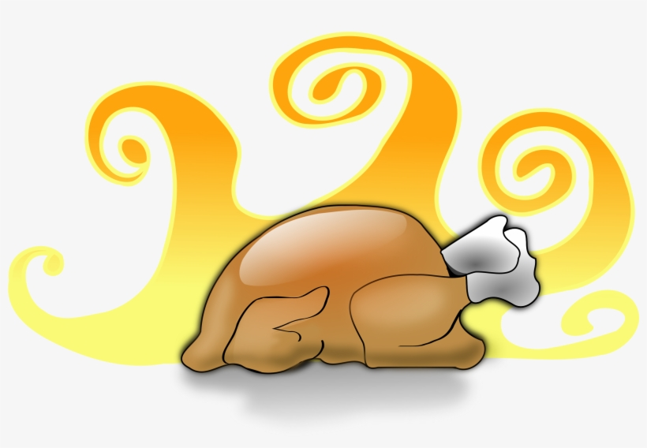

Thanksgiving Feast Recipes

Like a lot of families, we love Thanksgiving! And, as part of my project in The Odin Project, we are to create a Recipe page!
Is there a better way to celebrate the upcoming holiday and also complete my first assignment
than to make a website dedicated to our favorite Thanksgiving dishes?
I think not!
Click on the links above each photo to see the recipes we love.
Appetizers

Sides


Main Dishes

Desserts


I hope you enjoy the feast!